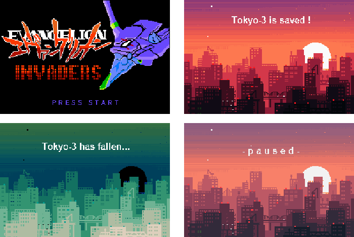

Gameboy Development
This game is a remix of the original Space Invaders game one would play on
their Atari. I was inspired to make this game from one of my favorite anime Neon Genesis
Evangelion. The anime takes place in future Japan, so I decided to make the
background a skyline to give off the impression of being in a city. The enemies
are "angels" and their purpose is to destroy humanity.

I'm currently working on enhancing the game by having the enemies move left and right, and also
move closer to the player to simulate the actual Space Invaders game.

Another project I've begun work on is called BeltLine Madness. I'm an avid cyclist, and I was inspired to make a game based on the BeltLine in Atlanta. Though I enjoy riding down the Eastside BeltLine, but it's impossible to do so on the weekends because of the amount of people walking on it. So, I decided to design a game from this frustration. The player must get from point A to point B on the BeltLine while trying dodge pedestrians. Here is some of my ideas/designs for the game I'm wanting to implement:

And my design document:
This will be my final project for CS 2261: Media Device Architecture. Throughout the course, I've completed various labs and homeworks related to game design, movements, collisions, and memory manipulation. This class has been my favorite class so far because it has taught me a lot of programming concepts as well as good design concepts. I've also gotten to chance to experiment with pixel art, something that I would like to become more proficient at making.
Github Repo